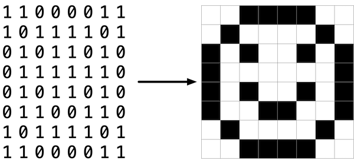

滤镜

要解决的问题
也许表示图像的最简单方式是使用像素（即点）的网格，每个像素可以有不同的颜色。对于黑白图像，因此我们需要每个像素 1 位，因为 0 可以表示黑色，1 可以表示白色，如下图所示。

从这个意义上说，图像只是一个位图（即，位的映射）。对于更多彩色图像，你只需要更多位每像素。支持”24 位颜色”的文件格式（如 BMP、JPEG 或 PNG）使用 24 位每像素。（BMP 实际上支持 1、4、8、16、24 和 32 位颜色。）
一份 24 位 BMP 使用 8 位来表示像素颜色中红色的量，8 位来表示像素颜色中绿色的量，8 位来表示像素颜色中蓝色的量。如果你听说过 RGB 颜色，嗯，那就是它了：红、绿、蓝。
如果 BMP 中某个像素的 R、G 和 B 值在十六进制中分别是 0xff、0x00 和 0x00，那么该像素是纯红色的，因为 0xff（在十进制中也称为 255）意味着”很多红色”，而 0x00 和 0x00 分别意味着”没有绿色”和”没有蓝色”。在这个问题中，你将操作单个像素的这些 R、G 和 B 值，最终创建你自己的图像滤镜。
在名为 filter-more 的文件夹中的 helpers.c 文件中，编写一个程序来对 BMP 文件应用滤镜。
演示
分发代码
对于这个问题，你将扩展 CS50 工作人员提供给你的代码的功能。
下载分发代码
登录 cs50.dev，点击你的终端窗口，然后只执行 cd。你应该会发现你的终端窗口的提示符类似于下面所示：
$
接下来执行
wget https://cdn.cs50.net/2026/x/psets/4/filter-more.zip
以便将一个名为 filter-more.zip 的 ZIP 文件下载到你的 codespace 中。
然后执行
unzip filter-more.zip
来创建一个名为 filter-more 的文件夹。你不再需要这个 ZIP 文件了，所以你可以执行
rm filter-more.zip
然后在提示符下回复”y”并按回车键来删除你下载的 ZIP 文件。
现在输入
cd filter-more
然后按回车键来将自己移入（即打开）该目录。你的提示符现在应该类似于下面所示。
filter-more/ $
只执行 ls，你应该能看到几个文件：bmp.h、filter.c、helpers.h、helpers.c 和 Makefile。你还应该看到一个名为 images 的文件夹，里面有四个 BMP 文件。如果遇到任何问题，再按照这些步骤试一次，看看你能不能找出哪里出错了！
背景
位图更多技术细节
回想一下，文件只是一系列位的序列，以某种方式排列。那么，一份 24 位 BMP 文件本质上只是一系列位，其中（几乎）每 24 位恰好表示某个像素的颜色。但 BMP 文件也包含一些”元数据”，即如图像高度和宽度之类的信息。这些元数据以两种数据结构的形式存储在文件的开头，通常称为”标头”，不要与 C 的头文件混淆。（顺便说一下，这些标头随着时间的推移已经演变。本问题使用微软 BMP 格式的最新版本 4.0，该版本随 Windows 95 首次亮相。）
这些标头中的第一个称为 BITMAPFILEHEADER，长度为 14 字节。（回想一下，1 字节等于 8 位。）这些标头中的第二个称为 BITMAPINFOHEADER，长度为 40 字节。紧接着这些标头之后是实际的位图：一个字节数组，其中每三个字节表示一个像素的颜色。然而，BMP 将这些三元组反向存储（即，作为 BGR），8 位用于蓝色，然后是 8 位用于绿色，然后是 8 位用于红色。（某些 BMP 也将整个位图反向存储，图像的第一行在 BMP 文件末尾。但我们已经按此处描述的方式存储了本问题集的 BMP，每个位图的第一行在最前面，最后一行在最后面。）换句话说，如果我们要将上面的 1 位笑脸转换为 24 位笑脸，用红色代替黑色，24 位 BMP 将按如下方式存储此位图，其中 0000ff 表示红色，ffffff 表示白色；我们已用红色高亮显示了所有 0000ff 的实例。

由于我们已将这些位从左到右、从上到下按 8 列呈现，如果你退后一步，你实际上可以看到红色的笑脸。
需要明确的是，回想一下，一个十六进制数字表示 4 位。因此，ffffff 在十六进制中实际上表示二进制中的 111111111111111111111111。
请注意，你可以将位图表示为一个二维像素数组：其中图像是一个行数组，每行是一个像素数组。事实上，这就是我们在本问题中选择表示位图图像的方式。
图像过滤
对图像进行滤镜处理到底是什么意思？你可以把滤镜处理看作取某个原始图像的像素，然后以某种方式修改每个像素，使得特定效果在结果图像中显现出来。
灰度
一种常见的滤镜是”灰度”滤镜，我们取一幅图像，想把它转换成黑白的。这是如何工作的呢？
回想一下，如果红、绿、蓝值全部设置为 0x00（0 的十六进制），则像素是黑色的。如果所有值都设置为 0xff（255 的十六进制），则像素是白色的。只要红、绿、蓝值全部相等，结果将是沿黑白谱系的不同灰度，较高的值意味着较浅的色调（更接近白色），较低的值意味着较深的色调（更接近黑色）。
所以要将像素转换为灰度，我们只需要确保红、绿、蓝值都是相同的值。但我们怎么知道该给它们设什么值呢？嗯，这可能是合理的：如果原始的红、绿、蓝值都相当高，那么新值也应该相当高。如果原始值都很低，那么新值也应该很低。
事实上，为了确保新图像的每个像素仍然与旧图像具有相同的大致亮度或暗度，我们可以取红、绿、蓝值的平均值来确定新像素的灰色色调。
如果你对图像中的每个像素都应用这个，结果将是转换为灰度的图像。
反射
某些滤镜还可能移动像素的位置。例如，反射图像是一种滤镜，其结果图像是你将原始图像放在镜子前所得到的效果。因此，图像左侧的任何像素最终应该出现在右侧，反之亦然。
请注意，原始图像的所有像素仍然会出现在反射后的图像中，只是那些像素可能已被重新排列到图像中的不同位置。
模糊
有很多方法可以创建模糊或柔化图像的效果。对于这个问题，我们将使用”盒式模糊”，其工作原理是取每个像素，对于每个颜色值，通过取相邻像素颜色值的平均值来赋予它一个新值。
考虑以下像素网格，其中我们为每个像素编号。

每个像素的新值将是该像素周围 1 行和 1 列范围内的所有像素值（形成一个 3x3 盒）的平均值。例如，像素 6 的每个颜色值将通过取像素 1、2、3、5、6、7、9、10 和 11 的原始颜色值的平均值获得（注意像素 6 本身也包含在平均值中）。同样，像素 11 的颜色值将通过取像素 6、7、8、10、11、12、14、15 和 16 的颜色值的平均值获得。
对于边缘或角落的像素，如像素 15，我们仍会查找 1 行和 1 列范围内的所有像素：在这种情况下，即像素 10、11、12、14、15 和 16。
边缘
在人工智能的图像处理算法中，检测图像中的边缘通常很有用：即图像中一个物体与另一个物体之间创建边界的线。实现此效果的一种方法是应用 Sobel 算子到图像上。
与图像模糊类似，边缘检测也通过取每个像素，并基于围绕该像素的 3x3 像素网格来修改它。但不是只取这九个像素的平均值，Sobel 算子通过取周围像素值的加权和来计算每个像素的新值。而且由于物体之间的边缘可能同时出现在垂直和水平方向，你实际上会计算两个加权和：一个用于检测 x 方向的边缘，一个用于检测 y 方向的边缘。具体来说，你将使用以下两个”卷积核”：

如何解读这些卷积核？简而言之，对于每个像素的三种颜色值，我们将计算两个值 Gx 和 Gy。例如，要计算一个像素的红色通道值的 Gx，我们将取该像素周围形成 3x3 盒的九个像素的原始红色值，将每个值乘以 Gx 卷积核中对应的值，然后取结果值的和。
为什么卷积核使用这些特定的值？例如，在 Gx 方向上，我们将目标像素右侧的像素乘以正数，将目标像素左侧的像素乘以负数。当我们求和时，如果右侧的像素与左侧的像素颜色相似，结果将接近 0（数字相互抵消）。但如果右侧的像素与左侧的像素非常不同，那么结果值将非常大或非常小，表明颜色发生了变化，这很可能是由于物体之间的边界造成的。类似的论证也适用于在 y 方向计算边缘。
使用这些卷积核，我们可以为像素的红色、绿色和蓝色通道分别生成一个 Gx 和 Gy 值。但每个通道只能取一个值，而不是两个：所以我们需要某种方式将 Gx 和 Gy 合并为单个值。Sobel 滤镜算法通过计算 Gx^2 + Gy^2 的平方根将 Gx 和 Gy 合并为最终值。而且由于通道值只能取 0 到 255 的整数值，确保结果值四舍五入到最近的整数，并且上限为 255！
那么如何处理图像边缘或角落的像素？处理边缘像素有很多方法，但为了本问题的目的，我们要求你将图像视为图像边缘周围有一个 1 像素的纯黑色边框：因此，尝试访问图像边缘之外的像素应被视为纯黑色像素（红色、绿色和蓝色的值各为 0）。这将有效地将这些像素从我们的 Gx 和 Gy 计算中忽略。
规格说明
实现 helpers.c 中的函数，使得用户可以对其图像应用灰度、反射、模糊或边缘检测滤镜。
grayscale函数应该接收一幅图像并将其转换为同一图像的黑白版本。reflect函数应该接收一幅图像并对其进行水平反射。blur函数应该接收一幅图像并将其转换为同一图像的盒式模糊版本。edges函数应该接收一幅图像并根据 Sobel 算子高亮物体之间的边缘。
你不应修改任何函数签名，也不应修改除 helpers.c 之外的任何其他文件。
理解
现在让我们来看看作为分发代码提供给你的一些文件，以了解它们的内容。
bmp.h
打开 bmp.h（通过在文件浏览器中双击它）并浏览一下。
你会看到我们之前提到的标头定义（BITMAPINFOHEADER 和 BITMAPFILEHEADER）。此外，该文件定义了 BYTE、DWORD、LONG 和 WORD，这些数据类型通常出现在 Windows 编程的世界中。注意它们只是你已经（希望）熟悉的原始类型的别名。看起来 BITMAPFILEHEADER 和 BITMAPINFOHEADER 使用了这些类型。
也许对你来说最重要的是，该文件还定义了一个名为 RGBTRIPLE 的 struct，它简单地将三个字节”封装”在一起：一个蓝色，一个绿色，一个红色（回想一下，这是我们在磁盘上实际查找 RGB 三元组时预期的顺序）。
为什么这些 struct 有用呢？回想一下，文件只是磁盘上的一系列字节（或者最终是位）。但这些字节通常顺序排列，前几个表示某物，接下来的几个表示另一物，以此类推。”文件格式”之所以存在，是因为世界已经标准化了哪些字节表示什么。现在，我们可以将文件从磁盘读入 RAM，作为一个大的字节数组。我们可以只记住 array[i] 处的字节表示一物，而 array[j] 处的字节表示另一物。但为什么不给其中一些字节命名，以便我们可以更轻松地从内存中检索它们呢？这正是 bmp.h 中的结构体允许我们做的事情。与其将某个文件看作一个长的字节序列，我们可以将其看作一系列 struct。
filter.c
现在，让我们打开 filter.c。该文件已经为你写好了，但这里有几点值得注意。
首先，注意第 10 行 filters 的定义。该字符串告诉程序允许的命令行参数是什么：b、e、g 和 r。它们各自指定了我们可能对图像应用的不同滤镜：模糊、边缘检测、灰度和反射。
接下来的几行打开一个图像文件，确保它确实是 BMP 文件，并将所有像素信息读入一个名为 image 的二维数组中。
向下滚动到从第 101 行开始的 switch 语句。注意，根据我们选择的 filter，会调用不同的函数：如果用户选择滤镜 b，程序调用 blur 函数；如果选择 e，则调用 edges；如果选择 g，则调用 grayscale；如果选择 r，则调用 reflect。还要注意，这些函数都将图像的高度、宽度和二维像素数组作为参数。
这些就是你将（很快！）实现的函数。正如你可能想象的那样，目标是让每个函数都以期望的滤镜应用于图像的方式来编辑二维像素数组。
程序的剩余行获取结果 image 并将其写入一个新的图像文件。
helpers.h
接下来，查看 helpers.h。该文件非常简短，只提供了你之前看到的函数的函数原型。
在此，请注意每个函数都将一个名为 image 的二维数组作为参数，其中 image 是一个包含 height 行的数组，每行本身又是另一个包含 width 个 RGBTRIPLE 的数组。因此，如果 image 表示整个图像，那么 image[0] 表示第一行，而 image[0][0] 表示图像左上角的像素。
helpers.c
现在，打开 helpers.c。这里是 helpers.h 中声明的函数的实现所在。但请注意，现在，实现是缺失的！这部分由你来完成。
Makefile
最后，让我们看看 Makefile。该文件指定了当我们运行像 make filter 这样的终端命令时应该发生什么。虽然你之前可能编写的程序仅限于一个文件，但 filter 似乎使用了多个文件：filter.c 和 helpers.c。所以我们需要告诉 make 如何编译这个文件。
尝试为你自己编译 filter，在你的终端中运行
$ make filter
然后，你可以通过运行以下命令来运行程序：
$ ./filter -g images/yard.bmp out.bmp
该命令获取 images/yard.bmp 处的图像，并在通过 grayscale 函数处理像素后生成名为 out.bmp 的新图像。不过 grayscale 目前还没有做任何事情，所以输出图像应该和原始的 yard 看起来一样。
提示
- 像素的
rgbtRed、rgbtGreen和rgbtBlue分量值都是整数，所以在将它们赋给像素值时，确保将任何浮点数四舍五入到最近的整数！
讲解视频
请注意，此播放列表中有 5 个视频。在 YouTube 上打开
如何测试
请务必在所有提供的示例位图文件上测试你所有的滤镜！
正确性
check50 cs50/problems/2026/x/filter/more
代码风格
style50 helpers.c
如何提交
在终端中执行以下命令提交你的作业，并按提示完成操作。
submit50 cs50/problems/2026/x/filter/more